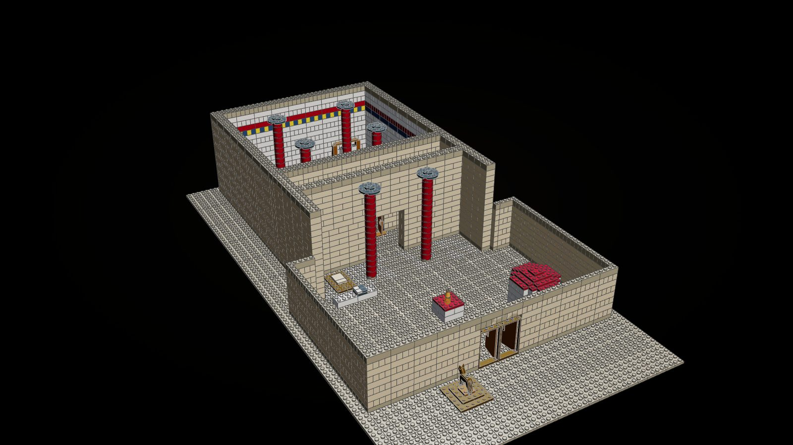
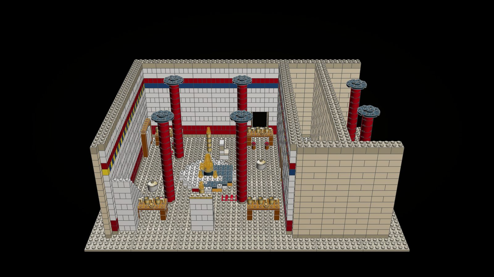
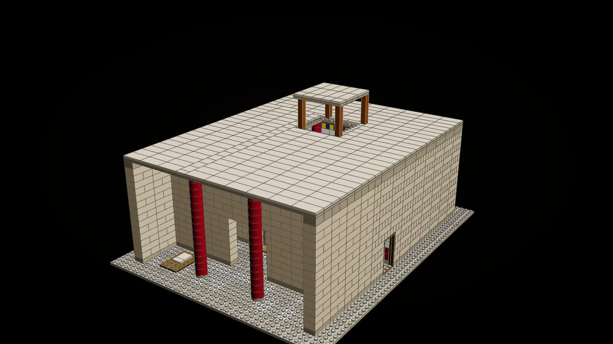
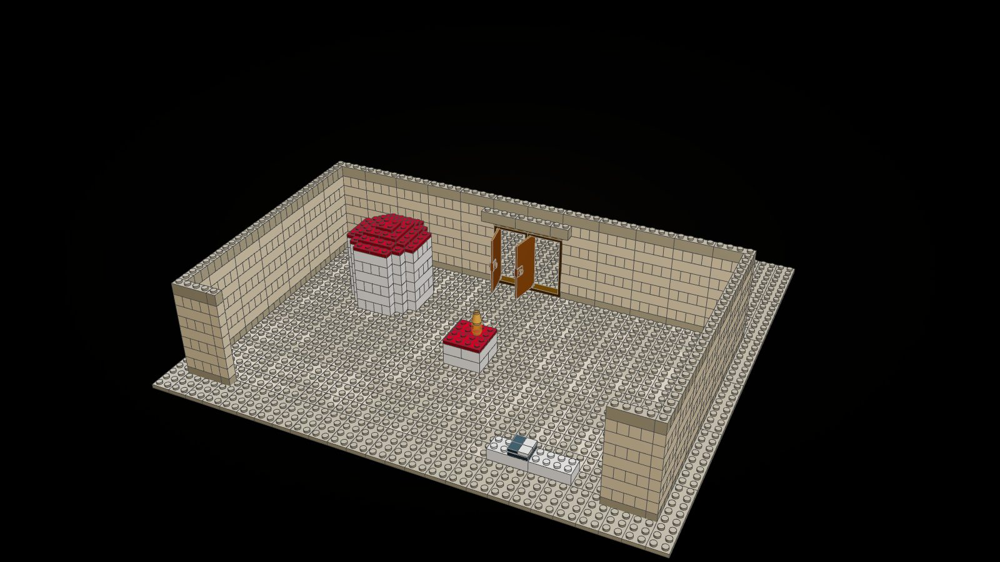
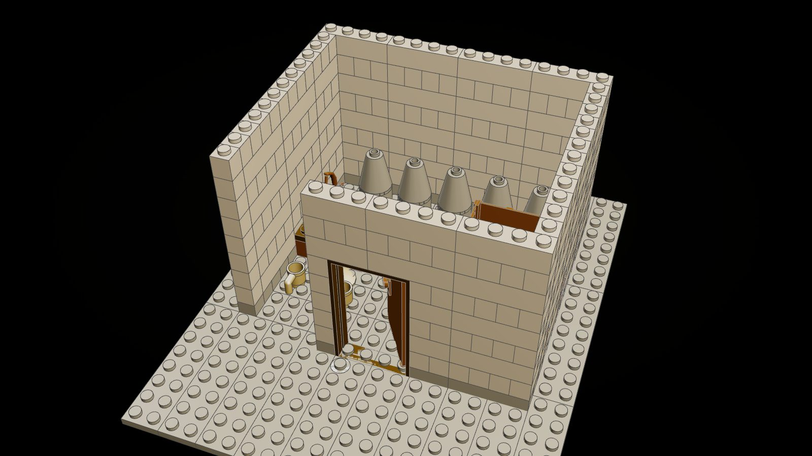
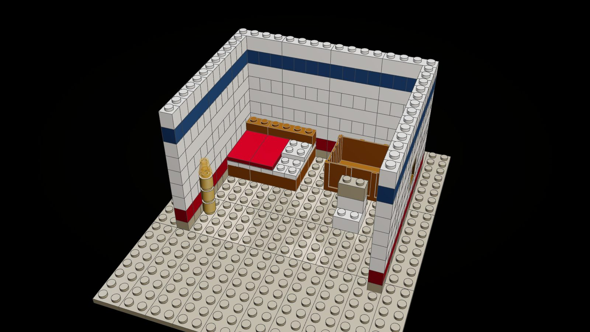

The Palace of Odysseus
The house on Ithaca where half the Odyssey happens: the suitors feast in its hall, Penelope weaves and unweaves at its loom, the beggar sits on its threshold, the bow is brought from its storeroom, and the doors are shut for the reckoning. Built at the scale of the world, sized from the Mycenaean palace at Pylos, and sold as the parts of a house.

"There lay the dog Argos, full of fleas, on the heaps of dung before the doors." (Odyssey XVII)
At the scale of the world
A minifigure is a person of 1.75 m: a course of bricks is 0.44 m, a stud 0.37 m. The great hall is 12.6 by 11 m inside, the size of the throne room at Pylos; its walls rise 7 m; the hearth is 4 m across; the four columns are 6.6 m to their capitals. A suitor at his table, a beggar on the threshold and a bow drawn across the hall all fit the room as Homer tells them.

The Great Hall
The megaron and its porch, open on one side like a modular building, so the play and the camera can go in.
- Four red columns with black capitals, as at Pylos and Knossos, round the hearth
- The round hearth, 4 m across: a rim of white stucco, a face painted in flames, the fire at its heart
- Frescoed walls (a red dado, white plaster, a frieze of blue and yellow) over a floor painted in squares
- Odysseus's high seat against the east wall; Penelope's chair inlaid with ivory and silver by the fire (XIX)
- The suitors' tables on trestles with gold cups, bread and fruit; stools; mixing bowls on their stands; bronze lamp-stands
- Penelope's loom with the shroud for Laertes half woven (II, XIX); the stair to the upper rooms; the side door (XXII)
- The great doors standing open over the ash-wood threshold where the beggar sat (XVII)
- The porch of two red columns, and the ox-hide and fleeces where Odysseus lay awake (XX)
- The east wall lifts out; the roof lifts off, with a lantern over the hearth for the smoke


The Court and the Gate
- A wall of dressed stone round the court, the gateway with two timber doors standing open
- The altar of Zeus of the Court, where Odysseus thought to take refuge (XXII)
- The round tholos of white stone under a stepped red roof
- The bench before the doors with its draughts board, where the suitors were playing when Athena came (I)
- Outside the gate, the dung heap and Argos on it, who knew his master after twenty years (XVII)

The Storeroom
"Where the treasures of the house were kept, bronze and gold and well-wrought iron; and there was the bow." (XXI)
- A row of jars of old wine along the wall; chests of clothes; a gold mixing bowl and cups
- The bow on its case, and the door with its key's ivory handle left on the step

Penelope's Chamber
The bright upper room where Penelope weeps and sleeps, and where Athena sends her dreams.
- White walls with a blue frieze, a red dado; a shuttered window on the court
- Her bed with its red cover, her chair, a chest, a tall lamp